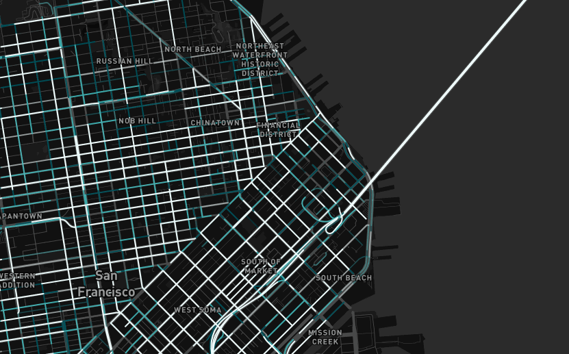
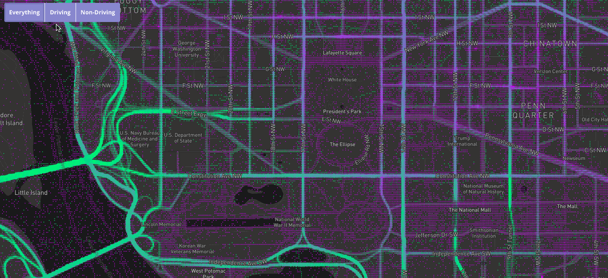
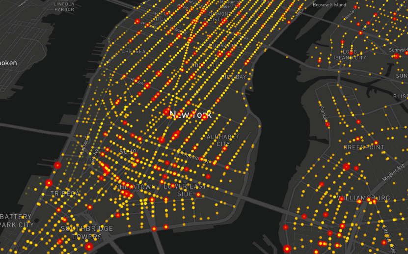
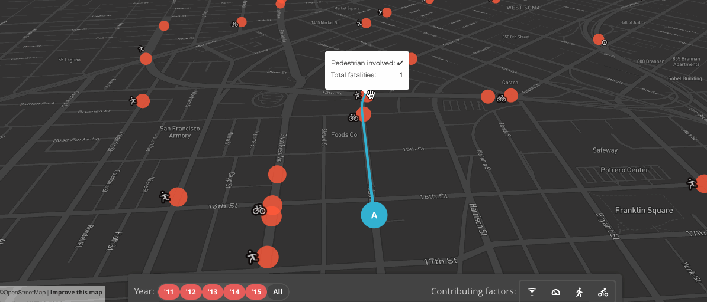
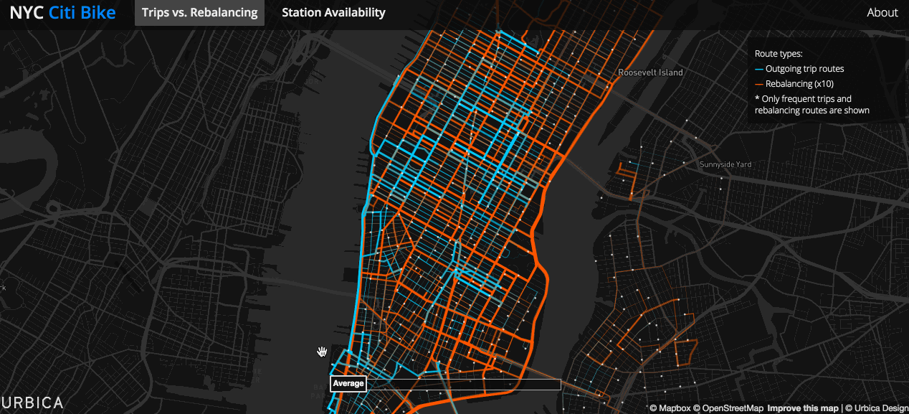

smart kitties
it's all
connected
where people move
how they move
open data
what are the goals?
safety&
public transport&
health care access&
infrastructure&
more efficient local govt
data
➡
decision-making
data
➡
certainty
mapbox + cities


tools
data
analysis
mentoring
??? cities enter 3 cities leave
mapbox.com/cities
@tcql
github.com/tcql
 smart kittiessmart kitties
smart kittiessmart kitties

 mapbox + cities
mapbox + cities ??? cities enter 3 cities leave
??? cities enter 3 cities leave